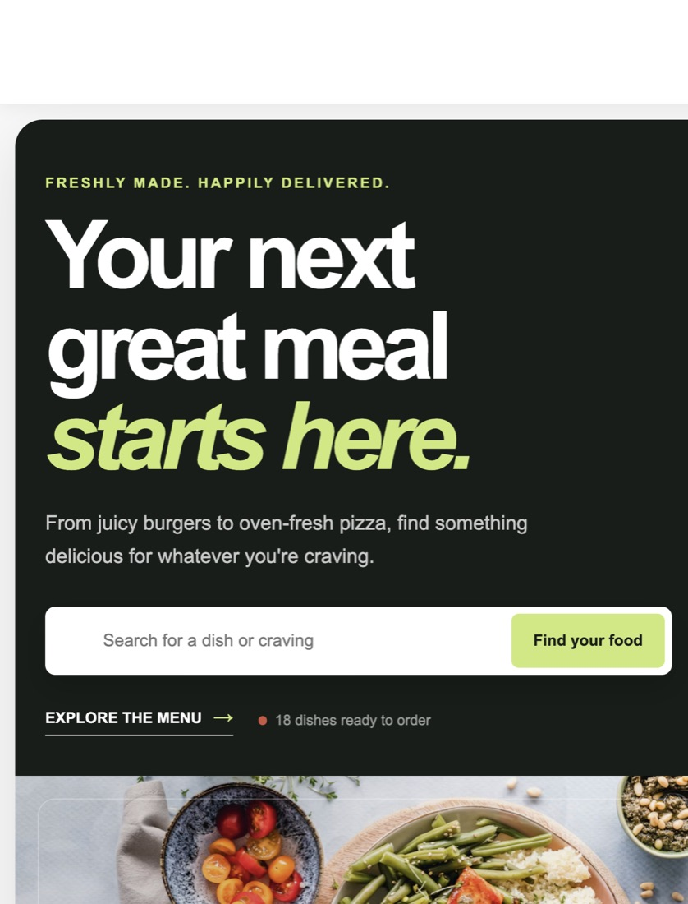
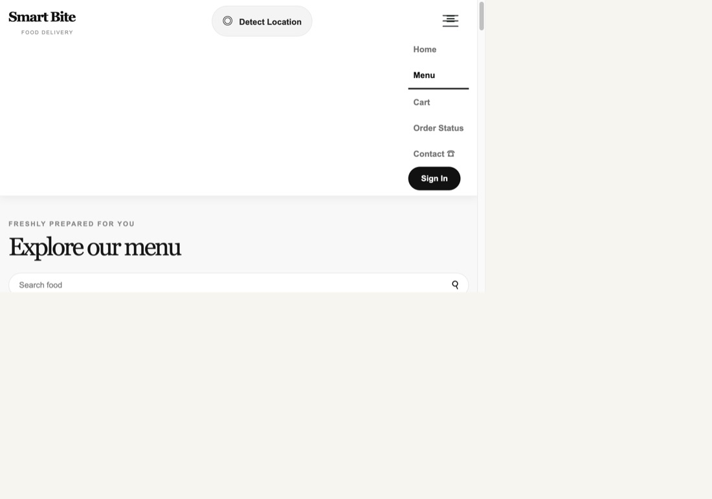
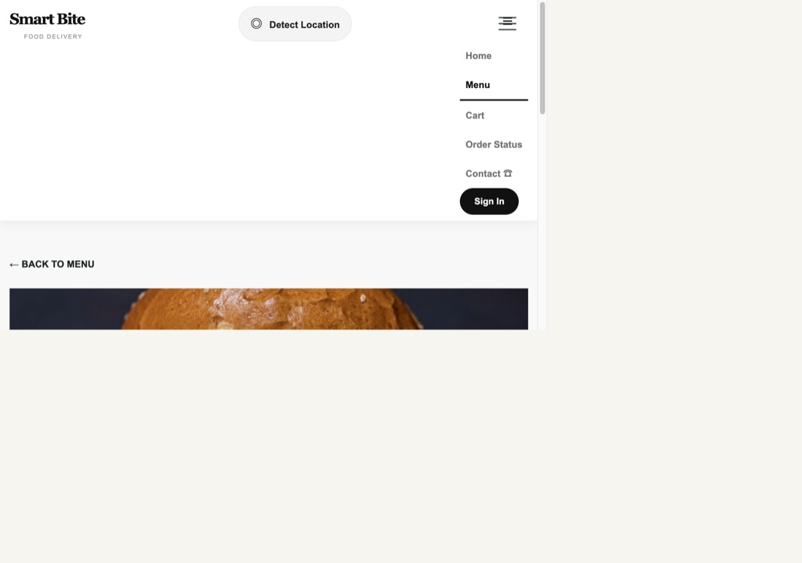
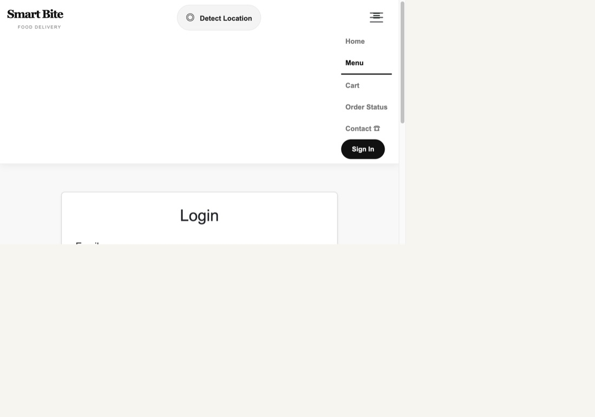
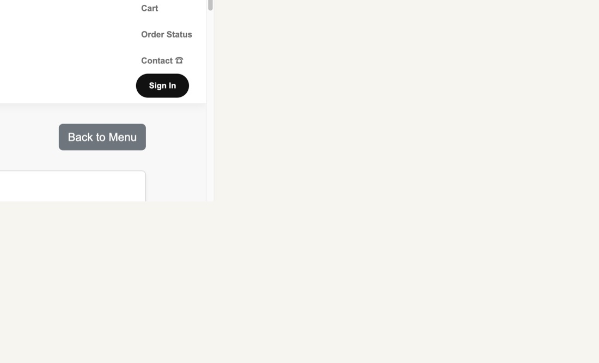

FOOD ORDERING AND DELIVERY SYSTEM
MINI PROJECT REPORT
.NET TECHNOLOGIES (01CE1523)
Submitted by
BACHELOR OF TECHNOLOGY
in
Computer Engineering
Faculty of Engineering & Technology
Marwadi University, Rajkot
November, 2026
Chapter 1
To design and develop Smart Bite, a web-based food ordering system using C# and ASP.NET Core MVC (.NET 10). The application gives customers a convenient way to explore food, review item details, and place orders through a cart. It also provides administrators with tools to manage the menu and update order statuses, with data stored in SQLite through Entity Framework Core.
The system is intended for customers ordering food and administrators maintaining a restaurant-style catalogue. Customers can browse dishes, read descriptions, search and filter the catalogue, manage cart quantities, place orders, and review their orders. Administrators can manage food and categories, import external menu results, and update order status.
The current project does not process payments, assign delivery drivers, provide live delivery tracking, or send customer notifications. Food images are supplied as URLs; image-file uploads are not part of this implementation. OpenMenu features require an API key in application configuration.
Chapter 2
| Component | Technology Used |
|---|---|
| Front End | HTML, Razor Views, CSS, Bootstrap, JavaScript/jQuery |
| Back End / Language | C#, ASP.NET Core MVC, .NET 10 |
| Application Architecture | MVC controllers with service and repository layers |
| Data Access | Entity Framework Core 10, migrations, repository pattern |
| Database | SQLite |
| Authentication | ASP.NET Core cookie authentication, role claims, BCrypt password hashing |
| External Integration | HttpClient and OpenMenu API |
| Testing | xUnit and Entity Framework Core InMemory provider |
| Development Tools | Visual Studio Code and .NET CLI |
| Module | Description |
|---|---|
| Account | Customer registration, login, logout, and cookie-based identity. |
| Explore Menu | Browse food items, view descriptions, search, and filter by category, price, or availability. |
| Food and Category Administration | Admin-only create, edit, list, and delete operations for catalogue data. |
| Cart | Add food, change quantities, remove items, and calculate the cart total. |
| Orders | Confirm checkout, view customer order history, and inspect order details. |
| Admin Order Dashboard | Review orders and update their status through the order lifecycle. |
| OpenMenu Import | Search external menu entries and import a selected item into the local catalogue. |
Chapter 3
Representative screens captured from the local development application.
|
 Figure 3.1: Home / Discover Page Introduces the service, provides menu search, and links to the Explore menu. |
 Figure 3.2: Explore Menu Lists dishes with category, price, description, availability, and filtering controls. |
Chapter 3
|
 Figure 3.3: Food Item Details Shows an individual food item, its description, price, and order action. |
 Figure 3.4: Login Page Provides the sign-in form used before protected customer actions. |
Chapter 3
|
 Figure 3.5: Add Food Form Allows an administrator to enter a name, description, price, category, image URL, and availability. |
Figure 3.6: Admin Order Dashboard Provides links to catalogue management and displays the current order queue. |
Chapter 4
Selected excerpts only; full implementation remains in the project source tree.
Listing 4.1: Models/Entities/Food.cs
namespace FoodOrderingSystem.Models.Entities;
public class Food
{
public int Id { get; set; }
public string Name { get; set; } = string.Empty;
public string Description { get; set; } = string.Empty;
public decimal Price { get; set; }
public string? ImageUrl { get; set; }
public bool IsAvailable { get; set; } = true;
public DateTime CreatedAt { get; set; }
public int CategoryId { get; set; }
public Category? Category { get; set; }
}
Listing 4.2: Program.cs — Database and Food Service Registration
builder.Services.AddDbContext<AppDbContext>(options =>
options.UseSqlite(
builder.Configuration.GetConnectionString("DefaultConnection")));
builder.Services.AddScoped<IFoodRepository, FoodRepository>();
builder.Services.AddScoped<IFoodService, FoodService>();
// At startup, apply migrations and seed the catalogue.
context.Database.Migrate();
Chapter 4
Listing 4.3: FoodController.cs — Menu Filter Logic
if (!string.IsNullOrWhiteSpace(search))
{
var searchTerm = search.Trim();
foods = foods.Where(food =>
food.Name.Contains(searchTerm, StringComparison.OrdinalIgnoreCase) ||
food.Description.Contains(searchTerm, StringComparison.OrdinalIgnoreCase) ||
(food.Category?.Name.Contains(
searchTerm, StringComparison.OrdinalIgnoreCase) ?? false));
}
if (categoryId.HasValue)
foods = foods.Where(food => food.CategoryId == categoryId.Value);
if (minPrice.HasValue)
foods = foods.Where(food => food.Price >= minPrice.Value);
if (maxPrice.HasValue)
foods = foods.Where(food => food.Price <= maxPrice.Value);
if (availableOnly)
foods = foods.Where(food => food.IsAvailable);
Listing 4.4: Data/AppDbContext.cs — Cart and Order Relationships
modelBuilder.Entity<CartItem>()
.HasOne(ci => ci.Food)
.WithMany()
.HasForeignKey(ci => ci.FoodId)
.OnDelete(DeleteBehavior.Restrict);
modelBuilder.Entity<CartItem>()
.HasIndex(ci => new { ci.CartId, ci.FoodId })
.IsUnique();
modelBuilder.Entity<OrderItem>()
.HasOne(oi => oi.Order)
.WithMany(o => o.Items)
.HasForeignKey(oi => oi.OrderId)
.OnDelete(DeleteBehavior.Cascade);
The existing xUnit suite covers successful registration, duplicate-email rejection, and login with a valid password. The most recent test run completed with 3 passed, 0 failed. The tests use EF Core's InMemory provider.
Smart Bite demonstrates a layered ASP.NET Core MVC food-ordering application with persistent catalogue, cart, and order data. Possible future enhancements include payment processing, delivery assignment and tracking, stronger production secret management, and additional automated tests for cart, checkout, and menu filtering.
Before submission, replace the candidate-name and enrolment-number placeholders on the cover page with the team details.